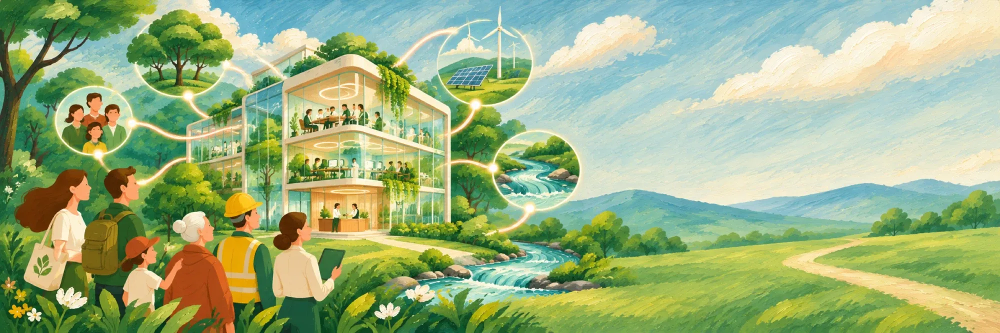

ESG и устойчивое развитие:
прибор иливывеска?
За двадцать лет три буквы — E, S и G — превратились из идеи нескольких банкиров в язык, на котором говорят компании, инвесторы и регуляторы всего мира. На ESG ссылаются в годовых отчётах, ради ESG-рейтингов нанимают целые отделы. Но помогает ли это планете и людям — или только отчётности? Разбираемся, что такое ESG, чем оно отличается от устойчивого развития, как с ним связаны все семнадцать Целей устойчивого развития ООН — и почему до 2030 года осталось так мало времени.
Три буквы, которые выучил весь бизнес
ESG — сокращение от трёх английских слов: Environmental, Social, Governance. По-русски — экология, общество и корпоративное управление. Идея простая: чтобы понять, хороша ли компания, мало посмотреть на её прибыль. Нужно ещё спросить, как она обращается с природой, с людьми и как устроена власть внутри неё.
- выбросы парниковых газов
- энергия и вода
- отходы и загрязнение
- вырубка лесов, биоразнообразие
- климатические риски для бизнеса
- условия и безопасность труда
- права человека в цепочке поставок
- отношения с местными сообществами
- качество и безопасность продукции
- разнообразие и равные возможности
- независимость совета директоров
- прозрачность отчётности
- борьба с коррупцией
- права акционеров
- вознаграждение руководства
Звучит разумно и даже очевидно. Но у ESG с самого начала была одна особенность, о которой часто забывают: его придумали не экологи и не социологи, а финансисты — и для финансистов.
Короткая история
Аббревиатура ESG появилась в 2004 году в докладе «Who Cares Wins» («Выигрывает тот, кому не всё равно»), подготовленном по инициативе Глобального договора ООН вместе с группой крупных банков. Аргумент был обращён к инвесторам: компании, которые плохо обращаются с природой, работниками и акционерами, рано или поздно платят за это — штрафами, забастовками, скандалами, потерей клиентов. Значит, учитывать эти факторы выгодно.
Через два года появились Принципы ответственного инвестирования ООН. Сегодня их подписали более пяти тысяч инвесторов и управляющих компаний. ESG превратилось в индустрию: рейтинги, индексы, «зелёные» облигации, отдельные фонды, консультанты.
В 2018 году Джон Элкингтон, автор «тройного итога», сделал необычный шаг: публично «отозвал» свою идею. Он написал, что концепция превратилась в инструмент бухгалтерии и пиара, тогда как задумывалась как способ изменить сам капитализм. Это хорошее предупреждение для разговора об ESG: любая метрика рискует стать целью сама по себе.
ESG — это не то же самое, что устойчивость
Эти понятия часто используют как синонимы, но у них разное происхождение и разный вопрос.
Устойчивое развитие отвечает на вопрос общества: как жить так, чтобы удовлетворять свои потребности, не лишая этой возможности будущие поколения? Его мера — состояние мира: климат, леса, бедность, здоровье, справедливость. Хороший образ — «бублик» Кейт Рауорт: никого нельзя оставлять ниже социального фундамента, и нельзя всем вместе выходить за экологический потолок.
ESG отвечает на вопрос инвестора: какие нефинансовые факторы могут повлиять на стоимость этой компании? Его мера — риски и возможности для бизнеса.
Иногда ответы совпадают: компания, которая сокращает выбросы, одновременно помогает климату и снижает свои риски. Но часто — нет. Компания может получить хороший ESG-рейтинг, потому что хорошо управляет рисками, при этом продолжая наращивать выбросы. А производитель, который делает очень нужную для перехода вещь, может иметь средний рейтинг из-за слабой отчётности. Помнить об этой разнице — первый шаг к трезвому взгляду.
Семнадцать целей, которые приняли все страны мира
Если ESG — инструмент, то что тогда цель? Самый подробный ответ, о котором договорилось человечество, — Цели устойчивого развития ООН. В сентябре 2015 года их приняли все 193 государства — члена ООН, включая Россию. Это семнадцать целей и сто шестьдесят девять конкретных задач, которые нужно достичь к 2030 году. Они охватывают всё, что входит в устойчивое развитие: бедность и голод, здоровье и образование, воду и энергию, работу и неравенство, города и климат, леса и океаны, мир и справедливость.
Важная особенность: цели неделимы. Нельзя победить голод, разрушив почвы и климат, и нельзя сохранить леса, если люди вокруг них живут в нищете. Поэтому устойчивое развитие — не список благих пожеланий, а система, в которой каждая цель зависит от других.
Ниже — все семнадцать целей: что каждая означает, одна цифра, показывающая масштаб задачи, и то, как к ней может приложить руку бизнес. Значки E, S и G показывают, какой части ESG она ближе всего.
Посмотрите на эти цифры вместе, и станет понятно, почему цели неразделимы. Голод связан с климатом и почвами, здоровье — с водой и воздухом, неравенство — с образованием, а войны отбрасывают назад по всем направлениям сразу. И почти за каждой цифрой стоит не только политика государств, но и решения компаний: что производить, где закупать, сколько платить, что выбрасывать.
Почему это актуально именно сейчас
Цели принимались с расчётом на пятнадцать лет. Сейчас конец 2026 года, до срока осталось четыре. И ООН в своих ежегодных докладах говорит прямо: мир серьёзно отстаёт.
Лишь примерно каждая шестая задача идёт по плану. Почти половина продвигается слабо, а больше трети застыли или откатились назад. Пандемия, войны, рост цен на еду и энергию, долги бедных стран отбросили многие показатели на годы. По числу людей в крайней нищете и голоде мир в начале 2020-х оказался примерно там же, где был за несколько лет до принятия целей.
Почему это касается ESG? По трём причинам.
Деньги. Чтобы достичь целей, развивающимся странам ежегодно не хватает порядка четырёх триллионов долларов. Государственных бюджетов на это заведомо не хватит. Частный капитал, который через ESG-фильтры направляют инвесторы, — один из немногих источников такого масштаба. Вопрос в том, идёт ли он туда, где нужнее всего, или туда, где ниже риск.
Климат не ждёт. 2024 год стал первым календарным годом, когда средняя температура планеты превысила доиндустриальный уровень более чем на полтора градуса. Это ещё не провал Парижского соглашения, которое говорит о долгосрочном среднем, но ясный сигнал: окно возможностей закрывается. Без климатической цели под удар попадают почти все остальные — продовольствие, вода, здоровье, мир.
Обратная волна. Одновременно усилилось сопротивление: часть политиков называет ESG и устойчивое развитие «идеологией», правила в Европе упрощают, деньги уходят из устойчивых фондов. Если ESG окажется лишь модой на отчётность, его легко будет отменить. Если же оно привязано к реальным результатам по целям, — это сделать гораздо труднее.
Отсюда главный вывод для бизнеса и инвесторов: оценивать компанию стоит не по тому, насколько красиво она рассказывает о себе, а по тому, к каким из семнадцати целей она реально приближает мир — и от каких отдаляет.
Обратите внимание на нижнюю строку. Цели, которые меньше всего попадают в ESG-рейтинги, — как раз те, где положение хуже всего: бедность, голод, неравенство. Это ещё одно напоминание о том, что ESG — прибор, показывающий в первую очередь риски для бизнеса, и его нужно дополнять вопросом о вкладе в цели.
Рейтинги, которые спорят друг с другом
Кредитные рейтинги разных агентств почти всегда совпадают: если одно считает компанию надёжным заёмщиком, то и другое, скорее всего, тоже. С ESG-рейтингами всё иначе. Исследователи Массачусетского технологического института под руководством Роберто Ригобона сравнили оценки шести крупных агентств и получили результат, который назвали «совокупной путаницей».
Почему так? Исследователи нашли три причины. Агентства оценивают разное: одно включает в рейтинг, скажем, лоббирование, другое — нет. Они измеряют по-разному одно и то же: условия труда можно оценивать по текучести кадров, по числу судебных исков или по наличию политик. И они по-разному взвешивают темы: что важнее — выбросы или права работников? Больше всего расхождений даёт второе: даже одну и ту же вещь агентства меряют разными линейками.
Для инвестора это неудобно. Для общества — серьёзнее: если рейтинги так сильно расходятся, они плохо подходят на роль сигнала о том, кто действительно помогает устойчивому развитию.
Риск для кого?
Есть и более глубокая проблема. Многие ESG-рейтинги отвечают на вопрос «как мир может навредить компании?», а не «как компания влияет на мир?». Например, климат в таком рейтинге важен в первую очередь как риск: затопит ли заводы, введут ли углеродный налог, отвернутся ли покупатели. Это называют одинарной существенностью.
Европейский союз в своих правилах корпоративной отчётности пошёл дальше и ввёл принцип двойной существенности: компания должна рассказывать и о том, как внешний мир влияет на неё, и о том, как она сама влияет на людей и природу.
Для устойчивого развития важна именно нижняя, зелёная стрелка. Лесу, реке и климату всё равно, насколько хорошо компания управляет своими рисками. Им важно, сколько она выбрасывает, вырубает и загрязняет.
Где прячутся выбросы компании
Самая измеримая часть буквы E — парниковые газы. По международному стандарту выбросы компании делят на три «охвата».
Подвох в том, что первые два охвата компания контролирует и считает сравнительно легко, а третий — самый большой и самый неудобный: он складывается из работы сотен поставщиков и миллионов покупателей. Компания, которая гордится «углеродной нейтральностью» своих офисов, может умалчивать о том, что основной след её продукции возникает на чужих фабриках и в чужих домах. Поэтому первый вопрос к любому климатическому отчёту: включён ли в него охват 3?
Второй вопрос: идёт ли речь об абсолютных сокращениях или об «интенсивности»? Компания может гордиться, что выбросы на единицу продукции упали на треть, — но если продажи выросли вдвое, общий объём выбросов всё равно увеличился. Атмосфера считает тонны, а не проценты.
Гринвошинг: зелёная краска
Чем популярнее становилось ESG, тем выгоднее было казаться устойчивым. Отсюда гринвошинг — «зелёная покраска»: преувеличение или выдумывание экологических заслуг.
Самые известные истории это хорошо показывают. В 2015 году выяснилось, что Volkswagen годами обманывал тесты на выбросы дизельных двигателей, — при том что компания до скандала числилась в лидерах отраслевых индексов устойчивости. В 2023 году американская Комиссия по ценным бумагам оштрафовала управляющую компанию DWS, входящую в группу Deutsche Bank, на 19 миллионов долларов за то, что она преувеличивала, насколько учитывает ESG-факторы в своих инвестициях. Фонды с «зелёными» названиями нередко держали акции нефтяных и угольных компаний.
Регуляторы ответили правилами: в Европе ограничили использование слов «устойчивый» и «ESG» в названиях фондов, ужесточили требования к рекламе «углеродно-нейтральных» товаров. Подробнее о механике гринвошинга — в эссе «Гринвошинг: не обман, а отрасль».
ESG в России
В России интерес к ESG резко вырос в 2020–2021 годах. Правительство утвердило национальную «зелёную» таксономию — перечень проектов, которые можно финансировать «зелёными» облигациями, Банк России выпустил рекомендации компаниям по раскрытию нефинансовой информации, появились российские ESG-рейтинги.
После 2022 года, с уходом многих иностранных инвесторов, повестка изменилась. Внимание сместилось от международных стандартов к национальным приоритетам, а внутри ESG — от буквы E к буквам S и G: занятости, социальным проектам в регионах, управлению. Климатическая часть во многом ушла на второй план, хотя в стране продолжают действовать закон об ограничении выбросов парниковых газов и эксперимент по квотированию выбросов на Сахалине.
Для России, где огромные лесные территории, северные экосистемы, тающая вечная мерзлота и экономика во многом построена на добыче, честная экологическая отчётность особенно важна. Ведь именно здесь находятся одни из крупнейших на планете природных хранилищ углерода — и одни из самых уязвимых.
Лестница корпоративной зрелости
Полезно смотреть на компании не через рейтинг, а через вопрос: зачем они этим занимаются? Ответы выстраиваются в лестницу.
Классические ESG-рейтинги хорошо видят первые две ступени. Устойчивое развитие требует подниматься выше: к реальному снижению вреда и к бизнесу, который не только меньше вредит, но и чинит. Примеры есть: кооперативы, которые восстанавливают почву, компании, которые проектируют товары для ремонта и вторичной переработки, энергетические проекты, принадлежащие жителям.
Как читать ESG-отчёт: семь вопросов
- Есть ли в отчёте абсолютные цифры выбросов, а не только «интенсивность»?
- Учтён ли охват 3 — цепочка поставок и использование продукции?
- Есть ли цели с конкретными сроками и подтверждены ли они независимо — например, инициативой научно обоснованных целей (SBTi)?
- На чём держится «углеродная нейтральность»: на реальном сокращении или на покупке компенсаций?
- Говорит ли компания о своём влиянии на людей и природу, а не только о рисках для себя?
- Совпадает ли то, что написано в отчёте, с тем, за что компания лоббирует в парламентах и министерствах?
- Подтверждён ли отчёт независимым аудитом?
Честный взгляд
ESG критикуют с двух сторон. Одни говорят, что это пустая бюрократия и «политика», мешающая бизнесу зарабатывать, — отсюда законы против ESG в части американских штатов. Другие — что это слишком мягкий инструмент, который позволяет компаниям выглядеть хорошо, ничего по сути не меняя. Обе критики отчасти справедливы, и обе упускают главное: ESG — не цель, а язык. Им можно и честно рассказывать о реальных переменах, и красиво их подменять.
Сумма несравнимого. Свести выбросы, условия труда и состав совета директоров в одну цифру — всё равно что сложить температуру, вес и рост человека. Высокий балл за управление может «перевесить» огромные выбросы. Поэтому полезнее смотреть на отдельные показатели, чем на итоговый рейтинг.
Рынок не решит за нас. Даже идеальные ESG-рейтинги направляют деньги туда, где риск ниже, а не туда, где польза больше. Многие нужные для устойчивости вещи — охрана природы, адаптация бедных регионов к климату, общественный транспорт — малоприбыльны или вовсе убыточны. Их не построишь одними предпочтениями инвесторов. Нужны законы, цена на выбросы, государственные инвестиции.
Абсолютные пределы. Планете неважно, какая компания «лучшая в отрасли». Ей важно, укладывается ли вся экономика в её возможности. Если все компании отрасли станут чуть лучше, но общий объём производства вырастет сильнее, нагрузка на природу всё равно увеличится. Об этом — в эссе о «бублике» и о том, что ВВП меряет скорость, а не направление.
И всё же — польза есть. Требования к раскрытию заставили тысячи компаний впервые посчитать свои выбросы. Инвесторы начали задавать неудобные вопросы. Сотрудники и покупатели получили язык, чтобы требовать от бизнеса большего. Это немало — если не путать измерение с решением.
Итог: прибор, а не вывеска
ESG родилось как способ для инвесторов увидеть риски, которых не видно в финансовом отчёте. Это полезный прибор — но прибор, показывающий в первую очередь здоровье компании, а не здоровье мира. Устойчивое развитие спрашивает о другом: становится ли жизнь людей лучше и укладываемся ли мы в возможности планеты.
Чтобы ESG служило устойчивости, а не только отчётности, ему нужны три вещи: смотреть на влияние, а не только на риски; считать абсолютные результаты по всей цепочке, а не красивые доли; и быть частью более широкой системы — законов, цен на выбросы, общественного контроля, — а не заменой ей.
А тем, кто читает ESG-отчёты как инвестор, сотрудник или покупатель, стоит помнить простое правило: верить тоннам, а не словам; делам, а не рейтингам.
Читайте также: Гринвошинг: не обман, а отрасль · Углеродные рынки: почему механизм в основном не сработал · ВВП меряет скорость. Нам нужен прибор, который мерит направление · Карта выбросов: где на самом деле углерод · Сетевые государства · Эволюция сознания — недостающее звено устойчивости
- The Global Compact (2004). Who Cares Wins: Connecting Financial Markets to a Changing World.
- UN Principles for Responsible Investment — данные о числе подписантов.
- WCED (1987). Our Common Future; United Nations (2015). Transforming our World: the 2030 Agenda for Sustainable Development.
- Elkington J. (2018). 25 Years Ago I Coined the Phrase «Triple Bottom Line». Here's Why It's Time to Rethink It. Harvard Business Review.
- Berg F., Kölbel J., Rigobon R. (2022). Aggregate Confusion: The Divergence of ESG Ratings. Review of Finance 26, 1315–1344.
- Европейская комиссия: директива о корпоративной отчётности в области устойчивого развития (CSRD) и стандарты ESRS — принцип двойной существенности; таксономия ЕС и регламент SFDR.
- IFRS Foundation (2023). IFRS S1 и IFRS S2 — стандарты ISSB.
- GHG Protocol: Corporate Value Chain (Scope 3) Standard.
- U.S. SEC (2023). Пресс-релиз о штрафе DWS Investment Management Americas за вводящие в заблуждение заявления об учёте ESG.
- Постановление Правительства РФ № 1912 от 21.09.2021 о критериях проектов устойчивого развития; рекомендации Банка России по раскрытию информации об учёте ESG-факторов.
- United Nations (2024). The Sustainable Development Goals Report 2024 — оценка прогресса по задачам.
- World Bank — Poverty, Prosperity and Planet Report 2024; FAO и др. (2024). The State of Food Security and Nutrition in the World; WHO — загрязнение воздуха; UNESCO — дети вне школы; WHO/UNICEF JMP (2023) — вода и санитария; IEA, IRENA и др. — Tracking SDG7 (2024); ILO/UNICEF (2021) — детский труд; ITU (2024) — Facts and Figures; World Inequality Report 2022; UN-Habitat — трущобы; Global E-waste Monitor 2024; WMO — State of the Global Climate 2024; FAO — The State of World Fisheries and Aquaculture 2024; FAO — Global Forest Resources Assessment 2020; IPBES (2019) — Global Assessment; UNHCR — Global Trends; WEF — Global Gender Gap Report 2024; UNCTAD (2024) — SDG Investment Trends / World Investment Report.
- Science Based Targets initiative — методология научно обоснованных целей.
- Raworth K. Doughnut Economics (2017).